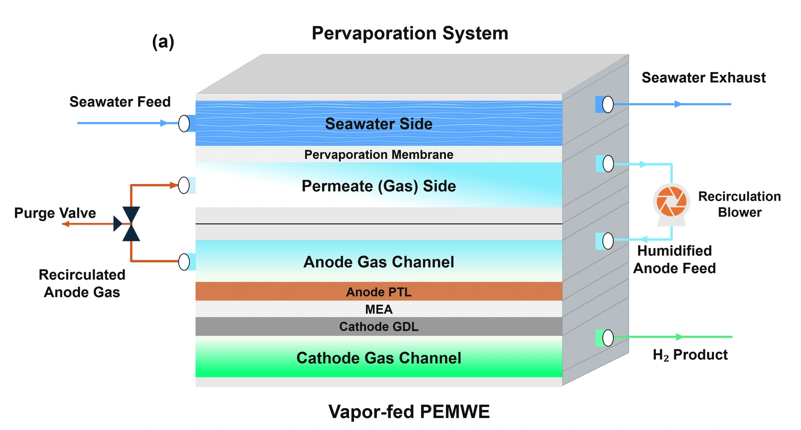
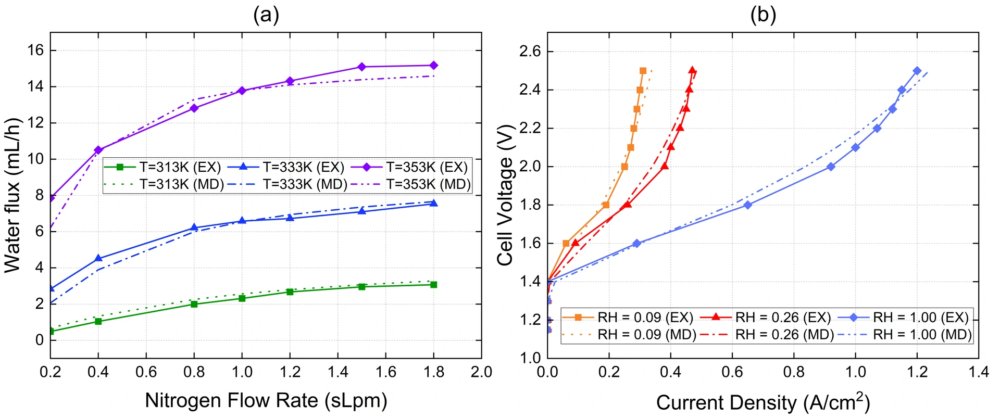
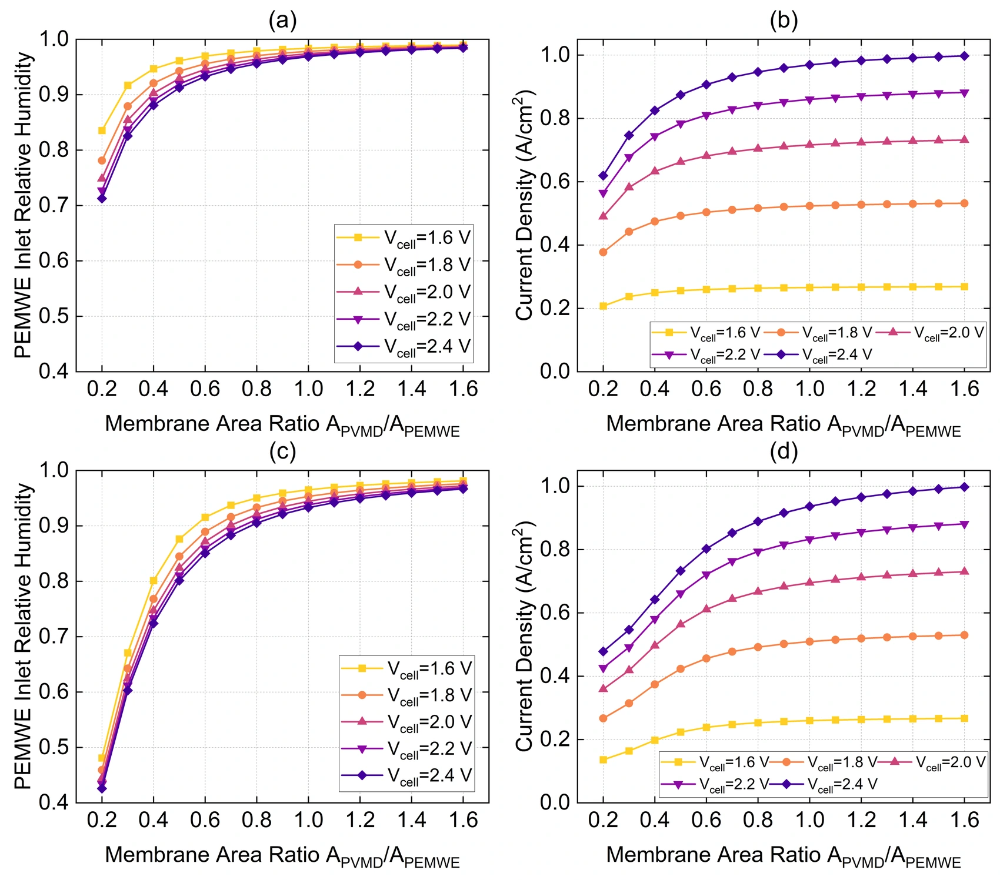

Hydrogen production
Vapor-fed water electrolysis
Coastal hydrogen production could draw on saline water where freshwater is scarce. I investigated how much water vapor a membrane purification module must supply to keep a polymer electrolyte membrane (PEM) electrolyzer hydrated.
Connecting vapor production and water demand
I developed a coupled two-dimensional COMSOL model of a pervaporation module and a PEM electrolyzer. The module transfers water as vapor while retaining dissolved salts on the feed side. A gas loop carries vapor to the electrolyzer and returns the oxygen-rich exhaust to the module.
I linked the outlet composition of each component to the inlet of the other. This let me calculate how vapor supply, membrane hydration, and current density respond to changes in module area and gas flow.


Checking each component against measurements
I ran water collection tests at 313, 333, and 353 K using deionized water and a nitrogen sweep. I also analyzed measured voltage–current curves at three inlet humidities to parameterize the electrolyzer. The component comparisons establish a basis for analyzing the coupled system. Experimental assessment of the integrated loop is ongoing.


More membrane area brought diminishing returns
A purification-to-electrolyzer membrane area ratio of 1.2 retained 96.8–99.5% of the current density predicted at a ratio of 1.6, across 1.6–2.4 V and gas recirculation rates of 0.8 and 1.8 standard L/min. Under the modeled conditions, the smaller module delivered nearly the same output.
Comparisons at fixed current traced most of the voltage increase under limited vapor supply to higher electrical resistance in the drier membrane. An ideal heat balance also identified candidate operating points for a follow-up heat recovery study.
